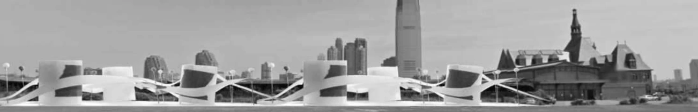
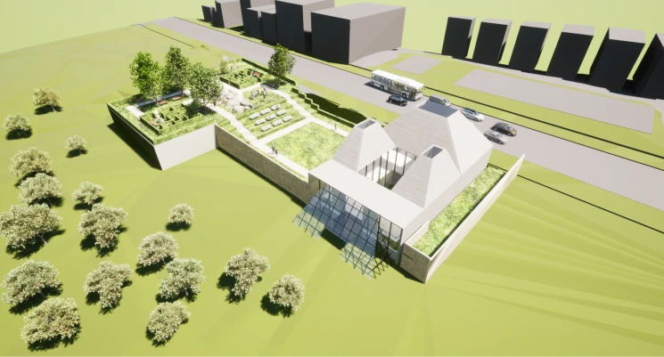
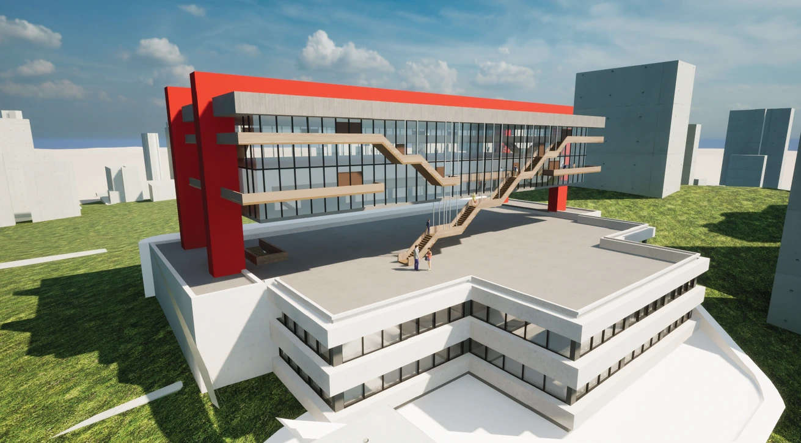

Architecture portfolio · 2026
Varnika
Duvvur
Architecture shaped by ecology,
memory, and change.
Selected work · 2021—2026
Ideas made
spatial.
Four projects exploring architecture as an ecological, historical, and adaptable system.

01 / Liberty Rail Gardens
02 / Branch Brook Park Gallery03 / The Terra Hotel

04 / Flexible Spaces at MASPArchitecture as responsibility
Design can recover memory,
support connection, and
remain open to change.